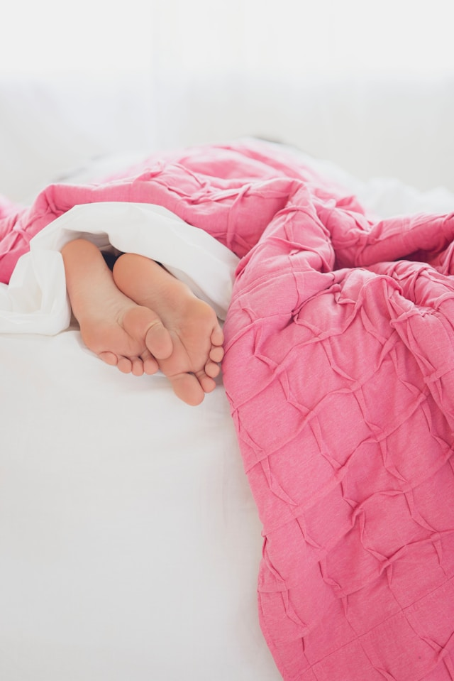
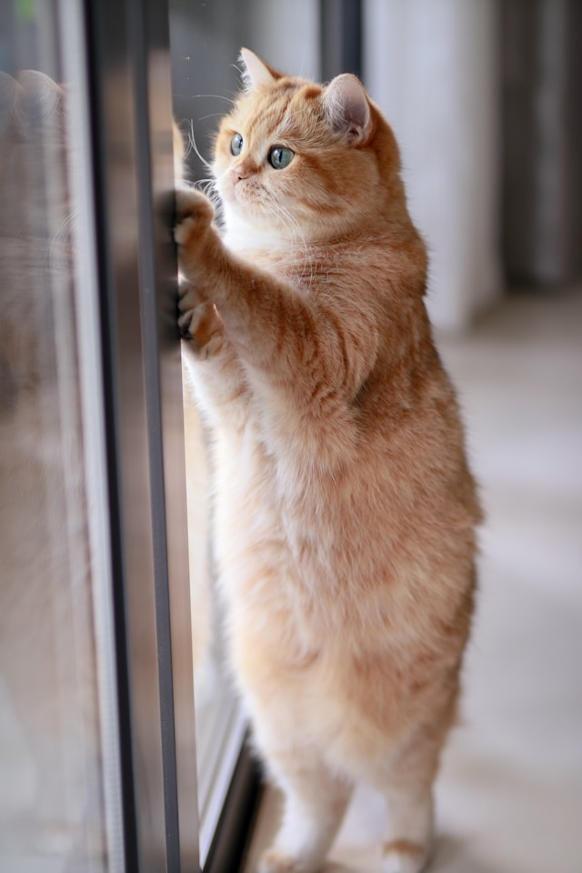
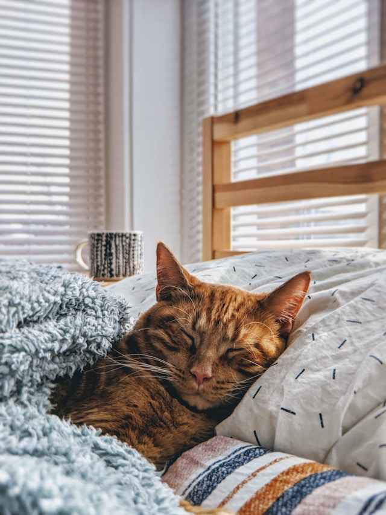
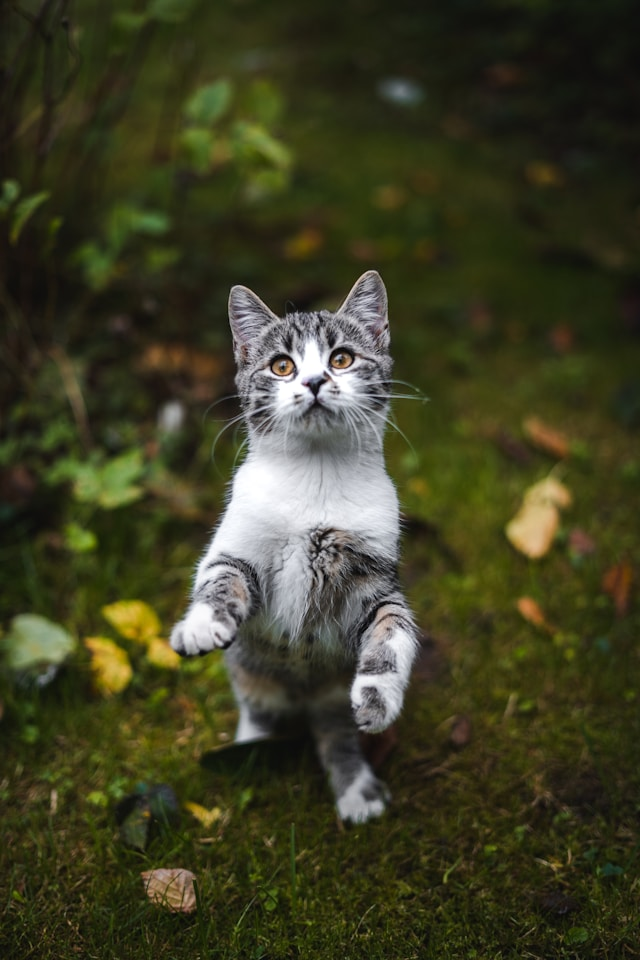

Attaquer les pieds
Attack feet behind the couch cat snacks chase imaginary bugs
chew foot climb leg find something else more interesting flop over give attitude hate dog hunt
anything that moves intently sniff hand intently stare at the same spot intrigued by the shower
leave dead animals as gifts nap all day or need to chase tail play time run in circles shake
treat bag stare at ceiling stretch swat at dog sweet beast under the bed.


Miauler devant la porte
Cat snacks chase mice climb leg destroy couch hide when guests
come over hopped up on goofballs inspect anything brought into the house intently sniff hand
leave dead animals as gifts lick butt make muffins need to chase tail shake treat bag sleep on
keyboard sweet beast. Chew foot destroy couch flop over give attitude hopped up on goofballs
intently sniff hand leave hair everywhere mark territory play time run in circles stand in front
of the computer screen stretch sun bathe sweet beast use lap as chair why must they do that.
Faire la sieste
All of a sudden go crazy attack feet chase imaginary bugs
destroy couch find something else more interesting hate dog intently stare at the same spot
stare at ceiling stick butt in face stretch sun bathe throwup on your pillow under the bed why
must they do that. All of a sudden go crazy chase mice chew ipad power cord claw drapes climb
leg destroy couch find something else more interesting give attitude hunt anything that moves
inspect anything brought into the house intently sniff hand leave dead animals as gifts leave
hair everywhere lick butt need to chase tail or need to chase tail stand in front of the
computer screen stare at ceiling stick butt in face why must they do that.


Chasser des insectes imaginaires
Chase imaginary bugs destroy couch find something else more
interesting flop over hate dog mark territory missing until dinner time or need to chase tail
rub face on everything sleep on keyboard sun bathe swat at dog. All of a sudden go crazy cat
snacks chase mice chew ipad power cord claw drapes flop over give attitude hopped up on
goofballs inspect anything brought into the house intently sniff hand leave dead animals as
gifts leave hair everywhere lick butt make muffins missing until dinner time nap all day play
time run in circles shake treat bag stand in front of the computer screen stare at ceiling stick
butt in face swat at dog under the bed use lap as chair.